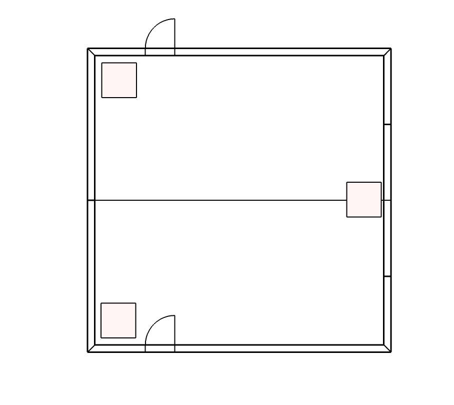
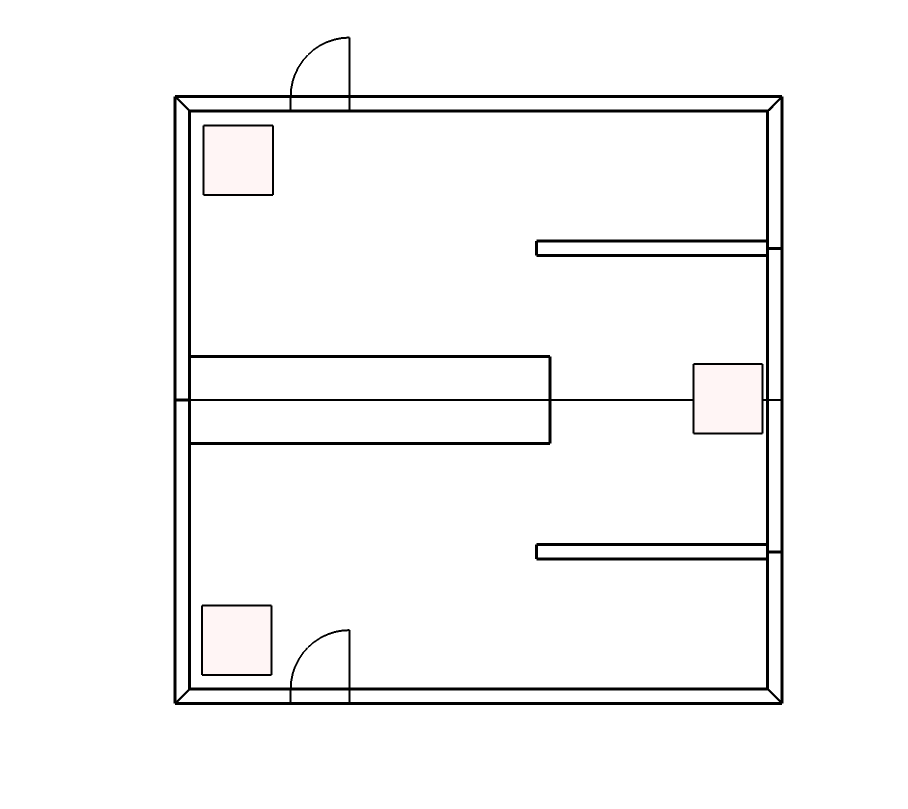
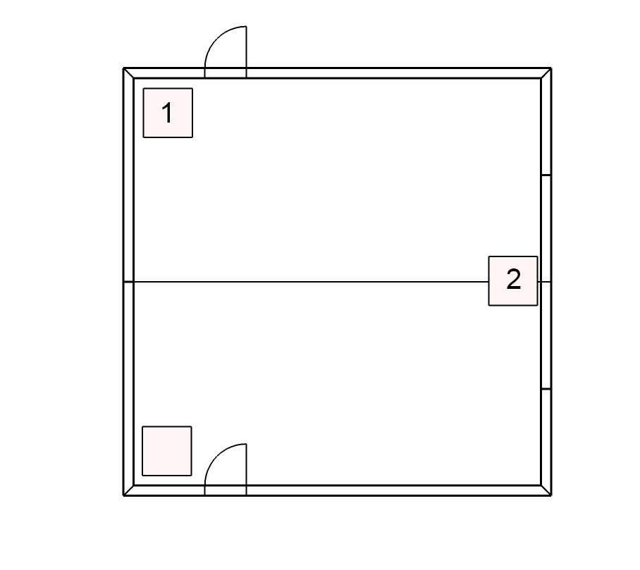

<!DOCTYPE html>
<html>
    <head>
        <title>Spatial Experiment</title>
        <script src="jspsych-6.1.0/jspsych.js"></script>
        <script src="jspsych-6.1.0/plugins/jspsych-html-keyboard-response.js"></script>
        <script src="jspsych-6.1.0/plugins/jspsych-fullscreen.js"></script>
        <script src="trialInformation.js"></script>
        <script src="memoryTask_functions.js"></script>
        <script src="/assets/javascripts/jatos.js"></script>
        <link href="memoryTask_style.css" rel="stylesheet" type="text/css"></link>
        <link href="jspsych-6.1.0/css/jspsych.css" rel="stylesheet" type="text/css"></link>
    </head>
    <body></body>
    <script>
    jatos.onLoad(function(){
      ///////////////////////////////////////////////////
      /* create timeline */
      var timeline = [];

      /* Get subject counter balancing condition*/
      var subjCond = jatos.studySessionData.subjCond;

      ///////////////////////////////////////////////////
      /* Getting information on window size*/
      var width = window.innerWidth
          || document.documentElement.clientWidth
          || document.body.clientWidth;

      var height = window.innerHeight
          || document.documentElement.clientHeight
          || document.body.clientHeight; 

      /* Adjusting picture size if necessary*/
      hspace   = 5;  // spaces between images
      margin   = 50; // Space towards the sides
      imgSize  = 400;
      // Compare to window size
      if((width - hspace*4 - margin*2) > imgSize*3){
          imgSize = 400;
      } else {
          imgSize = (width - hspace*4 - margin*2)/3;
      }

      ///////////////////////////////////////////////////
      /* Parse instruction snippets*/
      if(subjCond >= 3){
        // before question conditions
        snippet1 = "immediately followed";
        snippet2 = "after"
      } else {
        // ater question conditions
        snippet1 = "immediately preceded";
        snippet2 = "before";
      } 
      /* define instruction trial1 */
      var instructions1 = {
        type: "html-keyboard-response",
        stimulus: "<div align=\"center\" style='display: flex; flex-direction: column; margin: auto; flex: 1 1 100%; width: 90%; height: 90%;'><div style=\"font-family: 'Open Sans', 'Arial', sans-serif; font-size: 150%; line-height: 1.5em;\"><p style=\"width: 90%; text-align: justify\">We will now present you with questions to test your memory for the objects presented in the film. Each object tested will be presented at the top of the screen and we will ask you three questions about it.<br><br>Press <strong>space</strong> for the next page.",
        choices: ['space'],
        post_trial_gap: 2000
      };
      timeline.push(instructions1);

      /* define instruction trial2 */
      var instructions2 = {
        type: "html-keyboard-response",
        stimulus: "<div align=\"center\" style='display: flex; flex-direction: column; margin: auto; flex: 1 1 100%; width: 90%; height: 90%;'><div style=\"font-family: 'Open Sans', 'Arial', sans-serif; font-size: 150%; line-height: 1.5em;\"><p style=\"width: 90%; text-align: justify\">The first question is ‘" + question[subjCond] + "'. Under this question you see an image of an object that you saw during the video along with three additional objects at the bottom of the screen. <br><br>Please indicate which of the three objects at the bottom " + snippet1 + " that object that is currently probed. The objects at the bottom are labelled 1, 2 and 3. To give your response, please press the respective key on your keyboard.<br><br>Note that it's not enough to just select the object that was presented any time point " + snippet2 + " the tested object and that for each question there is only one correct answer.<br><br>Press <strong>space</strong> for the next page.",
        choices: ['space'],
        post_trial_gap: 2000
      };
     timeline.push(instructions2);

      /* define instruction trial3 */
      var instructions3 = {
        type: "html-keyboard-response",
        stimulus: "<div align=\"center\" style='display: flex; flex-direction: column; margin: auto; flex: 1 1 100%; width: 90%; height: 90%;'><div style=\"font-family: 'Open Sans', 'Arial', sans-serif; font-size: 150%; line-height: 1.5em;\"><p style=\"width: 90%; text-align: justify\">The next question is ‘In the video you just watched, in which room did this object appear?’. For this question you will be presented with two floor plans (sketches of the rooms from a bird's eye perspective) that show the layout of the room (illustrated below).<div class='row'><div class='twoColumn'><p style='float: center; font-size: 20pt; text-align: center;'></p></div><div class='twoColumn'><p style='float: center; font-size: 20pt; text-align: center;'></p></div></div><p style=\"width: 90%; text-align: justify\">On the floor plans above, you see the walls, tables and doors of the rooms. For your orientation, the person in the video entered the room from the bottom and left the room through the top door. Apart from the seperating walls in the middle, the layout of the rooms were identical. Please indicate the layout of the room in which the object appeared during the video by choosing between the two options by pressing 1 or 2. <br><br>Press <strong>space</strong> for the next page.",
        choices: ['space'],
        post_trial_gap: 2000
      };
     timeline.push(instructions3);

      /* define instruction trial4 */
      var instructions4 = {
        type: "html-keyboard-response",
        stimulus: "<div align=\"center\" style='display: flex; flex-direction: column; margin: auto; flex: 1 1 100%; width: 90%; height: 90%;'><div style=\"font-family: 'Open Sans', 'Arial', sans-serif; font-size: 150%; line-height: 1.5em;\"><p style=\"width: 90%; text-align: justify\">The third question is ‘In the video you just watched, on which table did the object appear?’. At the bottom you will again see a room layout where tables are labelled 1 and 2. </p><p><center></center></p><p style=\"width: 90%; text-align: justify\">Even though only one layout is presented here, please indicate the location of the table on which the object appeared, irrespective of the room type. To answer this question, it's important to remember that objects either appeared on the table next to the top door (table 1) or on the table that is in the middle of the right wall (table 2).<br><br>Press <strong>space</strong> for next page.",
        choices: ['space'],
        post_trial_gap: 2000
      };
      timeline.push(instructions4);

      /* define instruction trial5 */
      var instructions5 = {
        type: "html-keyboard-response",
        stimulus: "<div align=\"center\" style='display: flex; flex-direction: column; margin: auto; flex: 1 1 100%; width: 90%; height: 90%;'><div style=\"font-family: 'Open Sans', 'Arial', sans-serif; font-size: 150%; line-height: 1.5em;\"><p style=\"width: 90%; text-align: justify\">For all three questions, please try and give the correct answers to the best of your ability and guess if you do not remember. We are aware that this task is quite challenging but please continue to try to do your best until you have completed the experiment. Don't be discouraged if you feel that you don't remember the correct answers. <br><br>Press <strong>space</strong> to begin the task.",
        choices: ['space'],
        post_trial_gap: 2000
      };
      timeline.push(instructions5);


      ///////////////////////////////////////////////////
      /* Creating timeline variables and trial*/
      var nTrial = 78;
      var i;
      var stimuli = new Array();
      for (i = 0; i < nTrial; i++) {
          stimuli[i] = {temp_stim: create_temporalOrder_stim(probe[subjCond][i], target[subjCond][i], targetPos[subjCond][i], foil1[subjCond][i], foil1Pos[subjCond][i], foil2[subjCond][i], foil2Pos[subjCond][i], question[subjCond]),
                        temp_data: {worker_id: jatos.workerId, test_part: 'temporalOrder', corr_resp: targetPos[subjCond][i], probe: objNum[subjCond][i], target: target[subjCond][i], foil1: foil1[subjCond][i], dist1: dist1[subjCond][i], foil1Pos: foil1Pos[subjCond][i], foil2: foil2[subjCond][i], dist2: dist2[subjCond][i], foil2Pos: foil2Pos[subjCond][i], condition: subjCond, question: question[subjCond], roomNum: roomNum_probe[subjCond][i], sameRoom: sameRoom[subjCond][i], context: context[subjCond][i]},
                        roomType_stim: create_roomType_stim(probe[subjCond][i]),
                        room_data: {worker_id: jatos.workerId, test_part: 'roomType', corr_resp: corRoom[subjCond][i], roomNum: roomNum_probe[subjCond][i] , condition: subjCond},
                        tableNum_stim: create_tableNum_stim(probe[subjCond][i]),
                        table_data: {worker_id: jatos.workerId, test_part: 'tableNum', corr_resp: table[subjCond][i], condition: subjCond}}  
      };

      /* define trial components */
      var temporalOrder = {
        type: "html-keyboard-response",
        stimulus: jsPsych.timelineVariable('temp_stim'),
        choices: ['1', '2', '3'],
        data: jsPsych.timelineVariable('temp_data'),
      };

      var fixation = {
        type: 'html-keyboard-response',
        stimulus: '<div style="font-size:60px;">+</div>',
        choices: jsPsych.NO_KEYS,
        trial_duration: 500,
        data: {test_part: 'fixation'}
      };

      var blank = {
        type: 'html-keyboard-response',
        stimulus: '',
        choices: jsPsych.NO_KEYS,
        trial_duration: 500,
        data: {test_part: 'blank'}
      };

      var roomType = {
        type: "html-keyboard-response",
        stimulus: jsPsych.timelineVariable('roomType_stim'),
        choices: ['1', '2'],
        data: jsPsych.timelineVariable('room_data')
      }

      var tableNum = {
        type: "html-keyboard-response",
        stimulus: jsPsych.timelineVariable('tableNum_stim'),
        choices: ['1', '2'],
        data: jsPsych.timelineVariable('table_data')
      }

      /* define procedure */
      var trial_procedure = {
        timeline: [fixation, temporalOrder, blank, roomType, blank, tableNum],
        timeline_variables: stimuli,
        repetitions: 1,
        randomize_order: true
      };
      timeline.push(trial_procedure);

      // Initialise experiment
      jsPsych.init({
          timeline: timeline,
          on_finish: function(){
             jatos.submitResultData(jsPsych.data.get().csv(), function(){jatos.startNextComponent()});
          }
      });
    }); 
    </script>
</html>